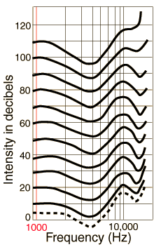

|
Frequencies for maximum sensitivity of human hearing
The hearing curves show a significant dip in the range 2000-5000 Hz with a peak sensitivity around 3500 -4000 Hz. This is associated with the resonance of the auditory canal. There is another enhanced sensitivity region at about 13,500 Hz which may be associated with the third harmonic resonance of the auditory canal. The high sensitivity region at 2-5kHz is very important for the understanding of speech.
|

|